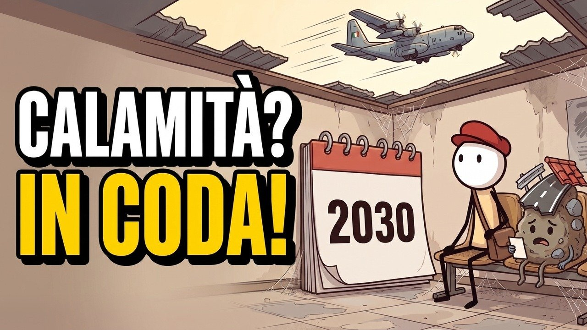
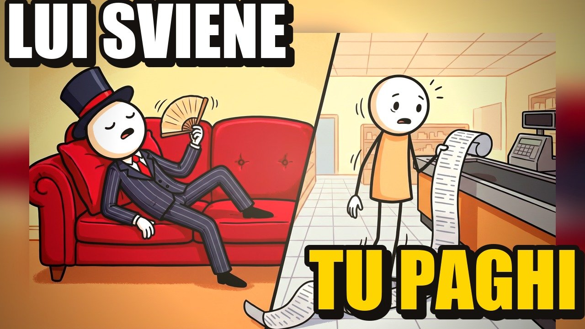

Fermo Posta: il potere, recapitato a domicilio
 5:52
5:52
 Data center in Italia: il decreto Bollette apre la corsia veloce. E la rete chi la paga?Fermo Posta · 24 novembre 2026
Data center in Italia: il decreto Bollette apre la corsia veloce. E la rete chi la paga?Fermo Posta · 24 novembre 2026
 4:53
Nvidia scandalo: Jensen Huang si dimette. Ma per i chip alla Cina bastava il 25%Fermo Posta · 17 novembre 2026
4:53
Nvidia scandalo: Jensen Huang si dimette. Ma per i chip alla Cina bastava il 25%Fermo Posta · 17 novembre 2026
 7:05
Accise sulla benzina: cosa paghi VERAMENTE quando fai il pienoFermo Posta · 16 novembre 2026
2:09
Taglio accise gasolio: scade, sparisce e torna. Chi paga lo sconto?Fermo Posta · 14 novembre 2026
7:05
Accise sulla benzina: cosa paghi VERAMENTE quando fai il pienoFermo Posta · 16 novembre 2026
2:09
Taglio accise gasolio: scade, sparisce e torna. Chi paga lo sconto?Fermo Posta · 14 novembre 2026

3:59
Legge di bilancio 2027: alluvioni e frane, 1,2 miliardi in meno fino al 2030Fermo Posta · 12 novembre 2026
 3:57
Guerra Iran USA: Trump dice "no" lunedì e "carico e pronto" martedìFermo Posta · 10 novembre 2026
3:57
Guerra Iran USA: Trump dice "no" lunedì e "carico e pronto" martedìFermo Posta · 10 novembre 2026
 1:59
Satira politica italiana: chi è Fermo Posta e perché apre le lettere del potereFermo Posta · 9 novembre 2026
1:59
Satira politica italiana: chi è Fermo Posta e perché apre le lettere del potereFermo Posta · 9 novembre 2026

3:02
Crollo di Wall Street dopo il voto: Dow Jones -1.800 punti, il giorno peggiore dal 2020Fermo Posta · 8 novembre 2026
2:56
Benzina a 2 euro e utili raddoppiati: chi guadagna dalla guerra mentre fai il pienoFermo Posta · 7 novembre 2026
3:01
Midterm 2026: Elon Musk spende quasi 450 milioni, 3 gare vinte e 29 perseFermo Posta · 6 novembre 2026
 1:38
Raffinerie chiuse in Europa: ora il diesel serve anche ai carri armatiFermo Posta · 4 novembre 2026
1:38
Raffinerie chiuse in Europa: ora il diesel serve anche ai carri armatiFermo Posta · 4 novembre 2026
 7:34
Perché la benzina aumenta: dalla guerra con l'Iran al tuo pieno, 27 euro in piùFermo Posta · 4 novembre 2026
7:34
Perché la benzina aumenta: dalla guerra con l'Iran al tuo pieno, 27 euro in piùFermo Posta · 4 novembre 2026
 1:58
Pace Iran Stati Uniti: colloqui in Qatar senza incontrarsi, e Hormuz resta chiuso al buon sensoFermo Posta · 2 novembre 2026
24 novembre 2026 · 4 min di lettura
Data center in Italia: il decreto Bollette apre la corsia veloce. E la rete chi la paga?
Oggi la posta arriva dalla rete elettrica. Oggetto: prenotazioni. Marco abita a sud di Milano, dalle parti di Rozzano, dove ci sono ancora le cascine con le mucche. Una mattina, sul campo dietro casa, arriva un vicino nuovo: il signor Data Center. Non mangia, non dorme, non va in ferie. Beve corrente.
17 novembre 2026 · 3 min di lettura
Nvidia scandalo: Jensen Huang si dimette. Ma per i chip alla Cina bastava il 25%
Oggi la posta arriva dalla California. Mittente: Nvidia, che a inizio ottobre valeva in borsa quasi 6.000 miliardi di dollari. Nella busta due lettere: il fondatore e allora amministratore delegato, Jensen Huang, scrive ai dipendenti che sostiene l'indagine e collaborerà pienamente; il consiglio scrive che Huang è stato il bersaglio di un'operazione di intelligence straniera e che i segreti di Nvidia non sono stati compromessi, mentre l'indagine comincia adesso. Secondo il New York Times, che cita persone informate, una dirigente di un'azienda di Singapore lavorava per il Ministero della Sicurezza di Stato cinese: nessuna accusa formale, e Nvidia parla di contatti normali con i clienti. Ma per far arrivare i chip in Cina bastava la posta della Casa Bianca: a dicembre 2025 il presidente Donald Trump ha dato via libera agli H200 per i clienti approvati in Cina, con il 25% agli Stati Uniti. L'8 novembre il consiglio di Nvidia scrive di avere fiducia in Huang, il 9 Trump dice che ha fatto un lavoro fantastico; il 12 novembre Huang si dimette con effetto immediato, senza motivi nel comunicato, e la direttrice finanziaria Colette Kress diventa amministratrice delegata ad interim. Tre commissioni della Camera gli chiedono un'audizione a porte chiuse per il 1° dicembre, o il mandato di comparizione: Huang ha accettato, data ancora da fissare.
16 novembre 2026 · 4 min di lettura
Accise sulla benzina: cosa paghi VERAMENTE quando fai il pieno
Hai 50 euro e la spia della riserva accesa. Quanti di quei 50 euro diventano benzina? Seguiamo la banconota di Marco riga per riga: 25,88 euro vanno allo Stato, fra accisa (16,86) e Iva (9,02). E l'Iva si paga anche sull'accisa: la tassa sulla tassa, quasi 4 euro a pieno. Poi la leggenda dell'Abissinia, le promesse sulle accise di ogni colore, il taglio del 2022 e l'accisa mobile, che ti ridà i tuoi soldi a rate e lo chiama sconto. Con la signora Accisa, che sale in macchina a ogni pieno.
14 novembre 2026 · 1 min di lettura
Taglio accise gasolio: scade, sparisce e torna. Chi paga lo sconto?
Sabato 7 novembre lo sconto sulle accise del gasolio scade e la proroga in Gazzetta non c'è. Domenica niente, lunedì niente, martedì 10 torna: 4,88 centesimi al litro fino al 23 novembre. Chi lo paga? Lo dice il decreto: serve "a compensare le maggiori entrate dell'imposta sul valore aggiunto" dovute all'aumento del petrolio. Intanto il Brent scende da 128 a 107 dollari in otto giorni, e il gasolio alla pompa da 2,26 a 2,24 euro.
12 novembre 2026 · 2 min di lettura
Legge di bilancio 2027: alluvioni e frane, 1,2 miliardi in meno fino al 2030
Apriamo la legge di bilancio 2027 pagina per pagina. All'articolo 135 i fondi per gli interventi per pubbliche calamità calano di 449 milioni nel 2027, 412 nel 2028 e 351 nel 2029: più di 1,2 miliardi, che tornano dal 2030. Il motivo, scritto nella legge: "efficientare e migliorare la capacità di programmazione". Intanto la deputata di Fratelli d'Italia Imma Vietri annuncia un emendamento per riaprire il condono edilizio del 2003, dopo il tentativo dichiarato inammissibile a gennaio nel Milleproroghe. Nella scuola quasi 7.000 posti in meno, con il ministro dell'Istruzione e del Merito, Giuseppe Valditara, che promette di lavorare per eliminare il taglio. All'assegno di inclusione 100 milioni l'anno in meno, "senza compromissione" delle prestazioni. E le missioni militari all'estero crescono di 520 milioni nel 2027 e di oltre 800 nel 2028.
10 novembre 2026 · 3 min di lettura
Guerra Iran USA: Trump dice "no" lunedì e "carico e pronto" martedì
Lunedì 2 novembre a Trump chiedono se colpirà ancora l'Iran dopo il voto: "No". Lo stesso giorno ad Axios dice che faranno qualcosa, ma senza fretta, e a Fox che Pickaxe Mountain, il complesso scavato sotto una montagna vicino a Natanz, si può colpire "in un'ora". Martedì gli americani votano e lui si dice "locked and loaded", carico e pronto. Mercoledì il suo partito perde e il presidente del Parlamento iraniano, Ghalibaf, scrive NO TO WAR in maiuscolo. Giovedì, dallo Studio Ovale: preferirebbe non distruggere il resto del Paese, "ma forse dovrò". Lo stesso giorno l'Iran manda una proposta sul nucleare, via Qatar. Venerdì, un colpo "minore" su un sistema antiaereo. E la posta contestata delle pastiglie di iodio resta in giacenza.
9 novembre 2026 · 1 min di lettura
Satira politica italiana: chi è Fermo Posta e perché apre le lettere del potere
Bilanci, decreti, comunicati, numeri: le lettere del potere sono pubbliche, ma restano ferme in un deposito, perché fuori c'è il circo. Piocy Tracoto, il postino di Fermo Posta, le tira fuori e ve le porta aperte, in parole semplici. Non da solo: con una squadra di agenti di intelligenza artificiale che cerca, va alla fonte, controlla i numeri e butta via quello che non regge.
8 novembre 2026 · 2 min di lettura
Crollo di Wall Street dopo il voto: Dow Jones -1.800 punti, il giorno peggiore dal 2020
Giovedì 5 novembre, il giorno dopo il voto americano, Wall Street crolla: il Dow Jones perde più di 1.800 punti, il Nasdaq 100 il 6,4%, il giorno peggiore dal marzo 2020. Per gli analisti è colpa del voto: i mercati temerebbero un freno ai data center dell'intelligenza artificiale. Regole nuove approvate: zero. Dentro la busta dell'IA, intanto, i soldi girano in tondo: Nvidia investe in OpenAI, OpenAI compra chip Nvidia e promette 250 miliardi a Microsoft. E fuori dal circo? 165.000 posti di lavoro in più, che a Wall Street sono una cattiva notizia, e il 57% degli americani che dice che i prezzi gli mangiano il tenore di vita.
7 novembre 2026 · 2 min di lettura
Benzina a 2 euro e utili raddoppiati: chi guadagna dalla guerra mentre fai il pieno
La benzina self è passata da 1,67 a 2 euro al litro, il gasolio da 1,72 a 2,23. Qualcuno il resto se lo prende: ConocoPhillips raddoppia gli utili e alza il dividendo, Chevron, Shell e TotalEnergies fanno lo stesso. L'Iran trasforma lo Stretto di Hormuz in un casello per pochi amici. E in Italia l'Eni regala un dividendo straordinario, di cui un terzo finisce allo Stato azionista, lo stesso che ti taglia l'accisa di quattro centesimi pagandola con l'IVA del tuo pieno.
6 novembre 2026 · 2 min di lettura
Midterm 2026: Elon Musk spende quasi 450 milioni, 3 gare vinte e 29 perse
Martedì 3 novembre gli americani hanno votato: i democratici si prendono il Senato e, per le proiezioni, anche la Camera. Per i repubblicani una batosta, e una batosta va consegnata a qualcuno. Trump dice al Wall Street Journal che l'Iran è stato "un pezzo" della sconfitta, ma il problema vero è che lui sulla scheda non c'era. Poi tocca a Fox News, a JD Vance, ai quasi 450 milioni di Elon Musk. E qualcuno la consegna l'ha gradita: Teheran.
4 novembre 2026 · 1 min di lettura
Raffinerie chiuse in Europa: ora il diesel serve anche ai carri armati
Per vent'anni l'Europa ha lasciato chiudere le sue raffinerie: concorrenza, conti, regole. Poi è arrivata la guerra e il diesel è diventato un problema. Il 28 ottobre la Commissione europea ha aperto un dialogo di alto livello con i raffinatori rimasti, co-presieduto dal commissario per l'Energia, Dan Jørgensen, e dal commissario per la Difesa, Andrius Kubilius. Risultato: una tabella di marcia congiunta.
4 novembre 2026 · 5 min di lettura
Perché la benzina aumenta: dalla guerra con l'Iran al tuo pieno, 27 euro in più
Il 26 febbraio il gasolio costava 1,72 euro al litro, il 28 ottobre 2,26: su un pieno da cinquanta litri, ventisette euro in più. Questa è la storia di quei ventisette euro, dalla guerra tra Stati Uniti, Israele e Iran allo Stretto di Hormuz, dalle proroghe delle accise all'IVA che paga lo sconto, fino al raid su Qeshm e al voto americano.
2 novembre 2026 · 1 min di lettura
Pace Iran Stati Uniti: colloqui in Qatar senza incontrarsi, e Hormuz resta chiuso al buon senso
Iran e Stati Uniti, colloqui di pace in Qatar senza incontrarsi. Araghchi spera nella "razionalità", Trump non ha fretta e, sulle bombe dopo il voto di metà mandato, risponde "possibile". Intanto lo Stretto di Hormuz resta il problema, e al distributore paghi tu.
1:58
Pace Iran Stati Uniti: colloqui in Qatar senza incontrarsi, e Hormuz resta chiuso al buon sensoFermo Posta · 2 novembre 2026
24 novembre 2026 · 4 min di lettura
Data center in Italia: il decreto Bollette apre la corsia veloce. E la rete chi la paga?
Oggi la posta arriva dalla rete elettrica. Oggetto: prenotazioni. Marco abita a sud di Milano, dalle parti di Rozzano, dove ci sono ancora le cascine con le mucche. Una mattina, sul campo dietro casa, arriva un vicino nuovo: il signor Data Center. Non mangia, non dorme, non va in ferie. Beve corrente.
17 novembre 2026 · 3 min di lettura
Nvidia scandalo: Jensen Huang si dimette. Ma per i chip alla Cina bastava il 25%
Oggi la posta arriva dalla California. Mittente: Nvidia, che a inizio ottobre valeva in borsa quasi 6.000 miliardi di dollari. Nella busta due lettere: il fondatore e allora amministratore delegato, Jensen Huang, scrive ai dipendenti che sostiene l'indagine e collaborerà pienamente; il consiglio scrive che Huang è stato il bersaglio di un'operazione di intelligence straniera e che i segreti di Nvidia non sono stati compromessi, mentre l'indagine comincia adesso. Secondo il New York Times, che cita persone informate, una dirigente di un'azienda di Singapore lavorava per il Ministero della Sicurezza di Stato cinese: nessuna accusa formale, e Nvidia parla di contatti normali con i clienti. Ma per far arrivare i chip in Cina bastava la posta della Casa Bianca: a dicembre 2025 il presidente Donald Trump ha dato via libera agli H200 per i clienti approvati in Cina, con il 25% agli Stati Uniti. L'8 novembre il consiglio di Nvidia scrive di avere fiducia in Huang, il 9 Trump dice che ha fatto un lavoro fantastico; il 12 novembre Huang si dimette con effetto immediato, senza motivi nel comunicato, e la direttrice finanziaria Colette Kress diventa amministratrice delegata ad interim. Tre commissioni della Camera gli chiedono un'audizione a porte chiuse per il 1° dicembre, o il mandato di comparizione: Huang ha accettato, data ancora da fissare.
16 novembre 2026 · 4 min di lettura
Accise sulla benzina: cosa paghi VERAMENTE quando fai il pieno
Hai 50 euro e la spia della riserva accesa. Quanti di quei 50 euro diventano benzina? Seguiamo la banconota di Marco riga per riga: 25,88 euro vanno allo Stato, fra accisa (16,86) e Iva (9,02). E l'Iva si paga anche sull'accisa: la tassa sulla tassa, quasi 4 euro a pieno. Poi la leggenda dell'Abissinia, le promesse sulle accise di ogni colore, il taglio del 2022 e l'accisa mobile, che ti ridà i tuoi soldi a rate e lo chiama sconto. Con la signora Accisa, che sale in macchina a ogni pieno.
14 novembre 2026 · 1 min di lettura
Taglio accise gasolio: scade, sparisce e torna. Chi paga lo sconto?
Sabato 7 novembre lo sconto sulle accise del gasolio scade e la proroga in Gazzetta non c'è. Domenica niente, lunedì niente, martedì 10 torna: 4,88 centesimi al litro fino al 23 novembre. Chi lo paga? Lo dice il decreto: serve "a compensare le maggiori entrate dell'imposta sul valore aggiunto" dovute all'aumento del petrolio. Intanto il Brent scende da 128 a 107 dollari in otto giorni, e il gasolio alla pompa da 2,26 a 2,24 euro.
12 novembre 2026 · 2 min di lettura
Legge di bilancio 2027: alluvioni e frane, 1,2 miliardi in meno fino al 2030
Apriamo la legge di bilancio 2027 pagina per pagina. All'articolo 135 i fondi per gli interventi per pubbliche calamità calano di 449 milioni nel 2027, 412 nel 2028 e 351 nel 2029: più di 1,2 miliardi, che tornano dal 2030. Il motivo, scritto nella legge: "efficientare e migliorare la capacità di programmazione". Intanto la deputata di Fratelli d'Italia Imma Vietri annuncia un emendamento per riaprire il condono edilizio del 2003, dopo il tentativo dichiarato inammissibile a gennaio nel Milleproroghe. Nella scuola quasi 7.000 posti in meno, con il ministro dell'Istruzione e del Merito, Giuseppe Valditara, che promette di lavorare per eliminare il taglio. All'assegno di inclusione 100 milioni l'anno in meno, "senza compromissione" delle prestazioni. E le missioni militari all'estero crescono di 520 milioni nel 2027 e di oltre 800 nel 2028.
10 novembre 2026 · 3 min di lettura
Guerra Iran USA: Trump dice "no" lunedì e "carico e pronto" martedì
Lunedì 2 novembre a Trump chiedono se colpirà ancora l'Iran dopo il voto: "No". Lo stesso giorno ad Axios dice che faranno qualcosa, ma senza fretta, e a Fox che Pickaxe Mountain, il complesso scavato sotto una montagna vicino a Natanz, si può colpire "in un'ora". Martedì gli americani votano e lui si dice "locked and loaded", carico e pronto. Mercoledì il suo partito perde e il presidente del Parlamento iraniano, Ghalibaf, scrive NO TO WAR in maiuscolo. Giovedì, dallo Studio Ovale: preferirebbe non distruggere il resto del Paese, "ma forse dovrò". Lo stesso giorno l'Iran manda una proposta sul nucleare, via Qatar. Venerdì, un colpo "minore" su un sistema antiaereo. E la posta contestata delle pastiglie di iodio resta in giacenza.
9 novembre 2026 · 1 min di lettura
Satira politica italiana: chi è Fermo Posta e perché apre le lettere del potere
Bilanci, decreti, comunicati, numeri: le lettere del potere sono pubbliche, ma restano ferme in un deposito, perché fuori c'è il circo. Piocy Tracoto, il postino di Fermo Posta, le tira fuori e ve le porta aperte, in parole semplici. Non da solo: con una squadra di agenti di intelligenza artificiale che cerca, va alla fonte, controlla i numeri e butta via quello che non regge.
8 novembre 2026 · 2 min di lettura
Crollo di Wall Street dopo il voto: Dow Jones -1.800 punti, il giorno peggiore dal 2020
Giovedì 5 novembre, il giorno dopo il voto americano, Wall Street crolla: il Dow Jones perde più di 1.800 punti, il Nasdaq 100 il 6,4%, il giorno peggiore dal marzo 2020. Per gli analisti è colpa del voto: i mercati temerebbero un freno ai data center dell'intelligenza artificiale. Regole nuove approvate: zero. Dentro la busta dell'IA, intanto, i soldi girano in tondo: Nvidia investe in OpenAI, OpenAI compra chip Nvidia e promette 250 miliardi a Microsoft. E fuori dal circo? 165.000 posti di lavoro in più, che a Wall Street sono una cattiva notizia, e il 57% degli americani che dice che i prezzi gli mangiano il tenore di vita.
7 novembre 2026 · 2 min di lettura
Benzina a 2 euro e utili raddoppiati: chi guadagna dalla guerra mentre fai il pieno
La benzina self è passata da 1,67 a 2 euro al litro, il gasolio da 1,72 a 2,23. Qualcuno il resto se lo prende: ConocoPhillips raddoppia gli utili e alza il dividendo, Chevron, Shell e TotalEnergies fanno lo stesso. L'Iran trasforma lo Stretto di Hormuz in un casello per pochi amici. E in Italia l'Eni regala un dividendo straordinario, di cui un terzo finisce allo Stato azionista, lo stesso che ti taglia l'accisa di quattro centesimi pagandola con l'IVA del tuo pieno.
6 novembre 2026 · 2 min di lettura
Midterm 2026: Elon Musk spende quasi 450 milioni, 3 gare vinte e 29 perse
Martedì 3 novembre gli americani hanno votato: i democratici si prendono il Senato e, per le proiezioni, anche la Camera. Per i repubblicani una batosta, e una batosta va consegnata a qualcuno. Trump dice al Wall Street Journal che l'Iran è stato "un pezzo" della sconfitta, ma il problema vero è che lui sulla scheda non c'era. Poi tocca a Fox News, a JD Vance, ai quasi 450 milioni di Elon Musk. E qualcuno la consegna l'ha gradita: Teheran.
4 novembre 2026 · 1 min di lettura
Raffinerie chiuse in Europa: ora il diesel serve anche ai carri armati
Per vent'anni l'Europa ha lasciato chiudere le sue raffinerie: concorrenza, conti, regole. Poi è arrivata la guerra e il diesel è diventato un problema. Il 28 ottobre la Commissione europea ha aperto un dialogo di alto livello con i raffinatori rimasti, co-presieduto dal commissario per l'Energia, Dan Jørgensen, e dal commissario per la Difesa, Andrius Kubilius. Risultato: una tabella di marcia congiunta.
4 novembre 2026 · 5 min di lettura
Perché la benzina aumenta: dalla guerra con l'Iran al tuo pieno, 27 euro in più
Il 26 febbraio il gasolio costava 1,72 euro al litro, il 28 ottobre 2,26: su un pieno da cinquanta litri, ventisette euro in più. Questa è la storia di quei ventisette euro, dalla guerra tra Stati Uniti, Israele e Iran allo Stretto di Hormuz, dalle proroghe delle accise all'IVA che paga lo sconto, fino al raid su Qeshm e al voto americano.
2 novembre 2026 · 1 min di lettura
Pace Iran Stati Uniti: colloqui in Qatar senza incontrarsi, e Hormuz resta chiuso al buon senso
Iran e Stati Uniti, colloqui di pace in Qatar senza incontrarsi. Araghchi spera nella "razionalità", Trump non ha fretta e, sulle bombe dopo il voto di metà mandato, risponde "possibile". Intanto lo Stretto di Hormuz resta il problema, e al distributore paghi tu.
Ogni dato dei video viene da qui: fonti originali. ZeroHedge lo trovi in fondo a ogni episodio come spunto: è da dove partiamo, non da dove vengono i dati.
Data center in Italia: il decreto Bollette apre la corsia veloce. E la rete chi la paga?
24 novembre 2026
- Decreto-legge 20 febbraio 2026, n. 21 (decreto Bollette), titolo e art. 8: Gazzetta Ufficiale n. 42 del 20/2/2026
- Domande a Terna, 95 GW, 290 domande lombarde, 15 su 531 (Il Sole 24 Ore, 23/8)
- Memoria ARERA 53/2026 al Parlamento sulla saturazione virtuale
- Terna e le 27 stazioni, stima di Simone Negri (ANSA, 25/8)
- Legge lombarda, oneri doppi e tripli (Il Sole 24 Ore, 27/5 e 1/6)
- Magenta, ex Novaceta (Il Sole 24 Ore, 30/6)
- Rho e la manifestazione (ANSA, 5/9)
- Il presidente della Regione Lombardia, Attilio Fontana (ANSA, 12/10)
- Voti locali negli Stati Uniti, Harwood (Bloomberg, 4/11)
- Bollette, elezioni e costi della rete (Bloomberg, 14/11)
- Procedimento unico per i centri dati (Regione Lombardia)
Nvidia scandalo: Jensen Huang si dimette. Ma per i chip alla Cina bastava il 25%
17 novembre 2026
- Huang ai dipendenti, 8/11 (Nvidia)
- Consiglio di Nvidia, 8/11
- New York Times, 6/11
- Nvidia sui contatti con l'azienda di Singapore (Bloomberg, 29/10)
- Trump autorizza gli H200 verso la Cina con il 25% agli Stati Uniti (Il Sole 24 Ore, 9/12/2025)
- Le regole del dipartimento del Commercio sugli H200 (AGI, 14/1/2026)
- Richiesta di Mast, Moolenaar e Crawford (Camera)
- Lettera a Huang
- Dimissioni di Huang e Colette Kress ad interim, 12/11 (comunicato di Nvidia depositato alla SEC)
- Trump su Huang, 9/11 (Il Sole 24 Ore)
- Seconda lettera delle commissioni, 12/11
- Huang accetta, data da fissare (Bloomberg, 15/11)
- Conti del terzo trimestre il 17/11 (Nvidia)
- Nvidia vicina ai 6.000 miliardi (Bloomberg, 6/10)
Accise sulla benzina: cosa paghi VERAMENTE quando fai il pieno
16 novembre 2026
- Prezzi, accisa e Iva in Italia, rilevazione del 9/11/2026 (Commissione europea, Weekly Oil Bulletin)
- Aliquote di accisa, Testo unico accise, Allegato I (Normattiva)
- Iva calcolata anche sull'accisa: risposta del Governo in Commissione Finanze della Camera, 16/3/2022: 1, 2
- Accise storiche e aliquota unica dal 1995: AGI, 1/9/2018 (anche le promesse di Salvini del 2018): 1, 2, 3
- Meloni sulle accise, gennaio 2023 (ANSA)
- Il video del 2019 e la proposta del 2024: Il Sole 24 Ore, 5/10/2024. Il programma di FdI 2022, sezione "Energia pulita, sicura e a costi sostenibili".
- Il taglio del 2022, costo e distribuzione: Ufficio parlamentare di bilancio, Flash 2/2022: 1, 2
- Accisa mobile, legge 244/2007, art. 1, commi 290-292 (Normattiva); l'ultimo decreto, Gazzetta Ufficiale n. 261 del 9/11/2026
Taglio accise gasolio: scade, sparisce e torna. Chi paga lo sconto?
14 novembre 2026
- Decreto Mef-Mase del 9 novembre 2026, "Rideterminazione temporanea dell'aliquota d'accisa", Gazzetta Ufficiale n. 261 del 9/11/2026
- Nuovo taglio fino al 23 novembre (ANSA, 10/11)
- Niente proroga il 7/11 (Il Sole 24 Ore)
- Il taglio precedente, 28/10-7/11 (ANSA, 28/10)
- Prezzi medi Mimit, gasolio self: 26/10 (ANSA): 1, 2
- Brent, prezzi giornalieri ufficiali (EIA)
Legge di bilancio 2027: alluvioni e frane, 1,2 miliardi in meno fino al 2030
12 novembre 2026
- Ddl di bilancio 2027-2029, Atto Camera 3174 (scheda e testi: articoli 66, 92, 95, 135 e allegati 5 e 6; relazione tecnica)
- Comunicato del Consiglio dei ministri n. 195, 28/10/2026 (circa 26 miliardi)
- Assegno di inclusione, art. 13 del decreto-legge 48/2023 (Normattiva)
- Imma Vietri annuncia l'emendamento sul condono (ANSA, 4/11)
- Proposta di legge A.C. 2315 (Vietri e altri)
- Condono del 2003, art. 32 del decreto-legge 269/2003 (Normattiva)
- Milleproroghe, emendamenti sul condono inammissibili (Bollettino delle Commissioni della Camera n. 620, 27/1/2026)
- Valditara alla Camera, question time del 4/11 (resoconto stenografico, seduta 738)
- Giorgetti, intervento del 30/10 (testo del MEF)
- Documento programmatico di bilancio 2027 (MEF)
- Termine degli emendamenti, 17/11 (Il Sole 24 Ore Radiocor, 4/11)
Guerra Iran USA: Trump dice "no" lunedì e "carico e pronto" martedì
10 novembre 2026
- Il "No" del 2/11 (Reuters)
- Axios, "no rush" (2/11)
- Fox, Pickaxe Mountain "in one hour" (Hannity, 2/11)
- Trascrizione dell'intervista con Hannity, 2/11 (Roll Call Factba.se)
- Trascrizione dello Studio Ovale, 5/11 (Roll Call Factba.se)
- Popolazione dell'Iran, 92,4 milioni nel 2025 (Banca Mondiale)
- Brent, prezzi giornalieri ufficiali (EIA)
- Pickaxe Mountain, circa 100 metri di roccia (stima ISIS, CNBC 22/7)
- Ispettori AIEA mai entrati (AP, 23/7)
- Grossi a Bloomberg TV, 10/9
- Financial Times, "locked and loaded" (3/11, via Reuters)
- Studio Ovale, 5/11, e proposta iraniana via Qatar (CNBC, che cita Reuters)
- Colpo del 6/11 e proposte del Qatar (AP)
- Smentita del ministero della Salute iraniano sullo iodio (post di Hossein Kermanpour, portavoce del ministero, su X)
- Brent sotto i 100 dollari il 4/11 (CNBC)
- Adam Smith, commissione Forze armate della Camera (4/11)
- Il post di Ghalibaf su X è riportato nelle fonti dell'episodio (`fonti.md`).
Spunto, non fonte: articoli ZeroHedge della settimana su Iran e Pickaxe Mountain.
Crollo di Wall Street dopo il voto: Dow Jones -1.800 punti, il giorno peggiore dal 2020
8 novembre 2026
- Chiusure del 5/11, CNBC
- Nasdaq 100, circa 2.300 miliardi di dollari in un giorno (NBC News)
- Nvidia e OpenAI, fino a 100 miliardi (comunicato Nvidia, 22/9/2025)
- OpenAI e Microsoft, 250 miliardi di servizi Azure (Microsoft, 28/10/2025)
- Microsoft e i server di Oracle, notizia del 6/11 (Bloomberg)
- Microsoft e Oracle, mancato rinnovo del contratto, 6/11 (CNBC)
- Posti di lavoro di ottobre, BLS
- Attese degli economisti (LSEG) e CME FedWatch, Fox Business
- Rialzo dei tassi del 16/9, Federal Reserve
- Fiducia dei consumatori di novembre, Università del Michigan
- Il nesso fra voto e crollo è la lettura degli analisti (CNBC), non un fatto provato: nello stesso giorno pesavano anche vendite forzate, tassi e trimestrali.
Spunto, non fonte: articoli ZeroHedge del 6/11 sul crollo e su Microsoft e Oracle.
Benzina a 2 euro e utili raddoppiati: chi guadagna dalla guerra mentre fai il pieno
7 novembre 2026
- ConocoPhillips, risultati del terzo trimestre 2026 (8-K del 5/11)
- Chevron, terzo trimestre 2026 (8-K)
- Prezzi medi self dei carburanti, Mimit via ANSA
- Hormuz aperto a Cina, India, Iraq e Qatar, Al Jazeera
- Eni, risultati del terzo trimestre e dividendo straordinario (23/10)
- Eni, azionisti rilevanti (MEF e Cassa Depositi e Prestiti)
- Taglio dell'accisa sul gasolio dal 28/10 al 7/11, ANSA
- Le mine sulle petroliere sono una dichiarazione dei Pasdaran via media di Stato iraniani, senza conferme indipendenti.
- I 460 milioni a MEF e CDP e l'euro di accisa e IVA per litro sono calcoli nostri sui dati qui sopra.
Spunto, non fonte: tre articoli ZeroHedge e OilPrice del 5/11 su ConocoPhillips, Hormuz e le petroliere.
Midterm 2026: Elon Musk spende quasi 450 milioni, 3 gare vinte e 29 perse
6 novembre 2026
- JD Vance su X, 4/11
- Donald Trump su Truth Social, 3/11, su Fox News
- Trump al Wall Street Journal ("Iran was a piece of it") e ai giornalisti il 4/11 ("largely true"), riportato da NBC News
- Risultati del Senato, CBS News
- Elon Musk: quasi 450 milioni di dollari secondo il conteggio del Washington Post su dati FEC (30/10); 3 gare vinte e 29 perse fra quelle del suo super PAC, mercoledì mattina, secondo CNBC ("Why billionaires' record midterm spending backfired spectacularly", 4/11); Texas, primo senatore democratico dal 1988, KUT.
- Mohammad Bagher Ghalibaf su X, 4/11
Spunto, non fonte: un articolo di ZeroHedge su Trump contro Fox News, segnalato dal nostro bot il 5/11.
Raffinerie chiuse in Europa: ora il diesel serve anche ai carri armati
4 novembre 2026
Perché la benzina aumenta: dalla guerra con l'Iran al tuo pieno, 27 euro in più
4 novembre 2026
- Agenzia internazionale dell'energia, rapporto di ottobre 2026
- Istat, prezzi al consumo di ottobre 2026
- Decreto-legge 18 marzo 2026, n. 33, art. 2 e 5, sulle accise (Normattiva)
- Prezzi dei carburanti, dati Mimit (ANSA)
- Discorso di Trump del 28/2, trascrizione e video (CBS News)
- Qeshm e Rezaei (Al Jazeera)
- Voto Usa del 3/11 (NPR)
Spunto, non fonte: ZeroHedge
Pace Iran Stati Uniti: colloqui in Qatar senza incontrarsi, e Hormuz resta chiuso al buon senso
2 novembre 2026
- CBS News, diretta aggiornata al 1/11/2026
- Al Jazeera, 31/10/2026
- Al Jazeera, diretta del 1/11/2026
- Al Jazeera, 9/10/2026
- Petroliere, annuncio iraniano del 22/10/2026, non verificato in modo indipendente
Spunto, non fonte: ZeroHedge
Chi siamo
Fermo Posta è un canale di satira politica a fumetti di Piocy Tracoto. Si parte da un fatto vero, si risale alle fonti originali e si racconta da chi paga il conto. Si colpisce chi ha potere, di ogni colore.
Disegni con Nano Banana Pro (Google Flow), copione e montaggio con Claude Opus 5.5, voce di Piocy Tracoto clonata con ElevenLabs.
Scrivi alla redazione
Segnalazioni di errori, spunti, collaborazioni, proposte di lavoro e stampa.
Gli errori segnalati e confermati vengono corretti nella descrizione del video e qui.